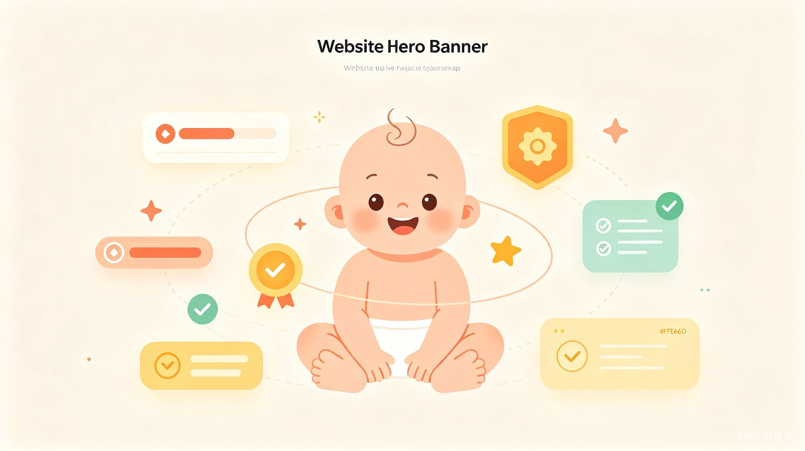
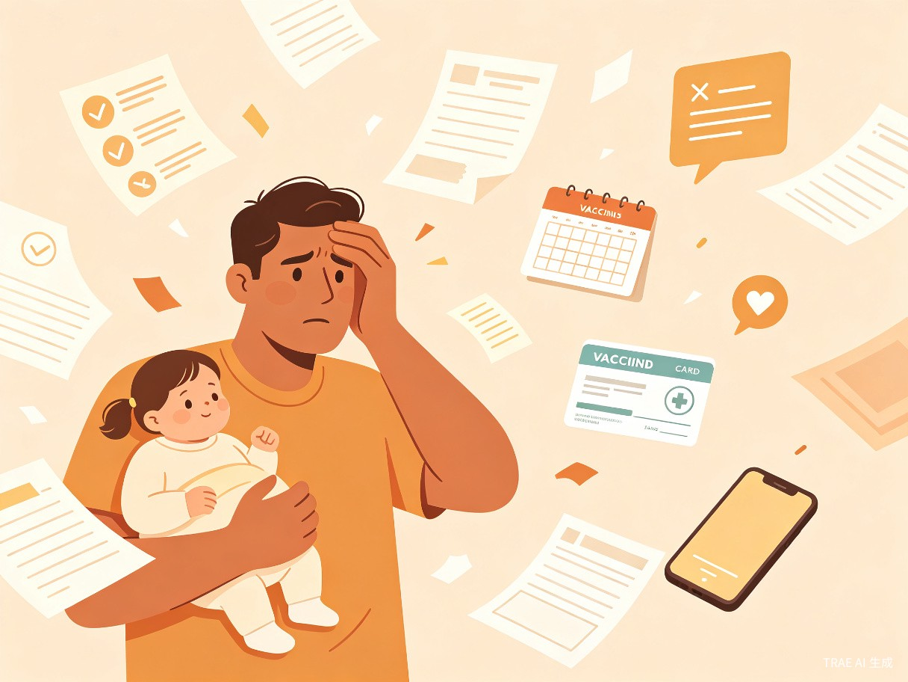
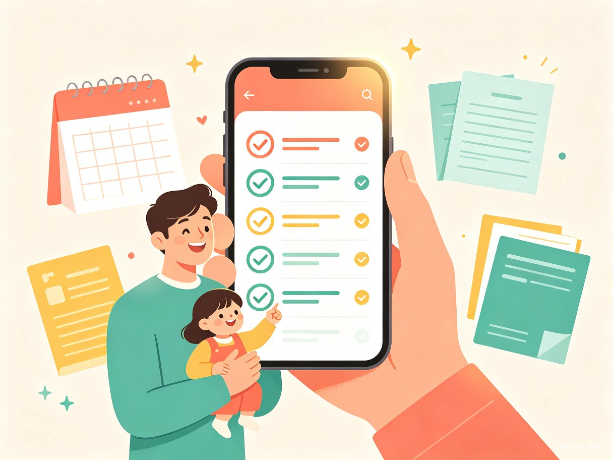

人类幼崽养成系统
把育儿变成一场通关游戏 —— 一款以"系统任务"为交互方式的育儿计划管理 App
创意名称与介绍
创意名称
人类幼崽养成系统
一款以"系统任务"为交互方式的育儿计划管理 App，让育儿像玩游戏一样清晰有趣。
产品形态
移动端 App
覆盖从宝宝出生到初中（0-12 岁）的全周期育儿任务管理，以游戏化任务系统为核心交互方式。
想解决什么问题
新手父母面对从宝宝出生到上初中的漫长育儿路，总是"不知道什么时候该做什么"。疫苗、体检、办证、入学等关键节点全靠自己到处查、到处问，遗漏和焦虑是常态。
为什么想到做这个
在梳理育儿清单的过程中，发现从出生到初中有上百个待办事项，涵盖疫苗接种、健康体检、证件办理、教育入学等多个维度。如果能把这些变成一套自动生成的"任务时间轴"，到点就提醒，养娃会轻松很多。
目标用户及痛点

面向哪些用户
0-12 岁孩子的父母，尤其是容易焦虑、怕遗漏关键事项的新手爸妈。
使用场景
宝宝刚出生，手足无措时，打开 App 就能看到一份清晰的"新手任务清单"
每个月该打什么疫苗、该做什么体检，系统提前一周推送提醒
幼儿园报名、幼升小、小升初等关键节点前，系统发出"主线任务"预警
⚠️ 当前痛点
如果没有这个产品，父母需要同时关注接种本、社区医院通知、育儿 App 科普、家长群消息等多个信息源，信息碎片化严重。一旦错过窗口期（如疫苗接种时间、入园报名），补救成本极高，还会产生自责和家庭矛盾。
育儿关键节点时间轴
价值与意义

效率提升
把原本需要父母自己搜索、整理、记忆的育儿计划，变成一套自动生成的"任务时间轴"，大幅降低信息负担。用户不需要花时间研究"接下来该干什么"，系统已经帮他排好了。
社会价值
通过"任务系统"的游戏化设计，降低育儿焦虑感。把"必须做"的压力转化为"完成任务"的成就感，让新手父母从"被动应付"变为"主动养成"。
🌍 普惠愿景
可以考虑免费向偏远地区家庭开放基础功能，弥补当地育儿指导资源的不足，助力科学育儿普惠。通过降低信息获取门槛，让每个家庭都能享受到系统化、科学化的育儿指导。
核心价值一句话
把育儿从"焦虑的未知旅程"变成"清晰的通关游戏"，
让每一位新手父母都能从容应对每个成长节点。